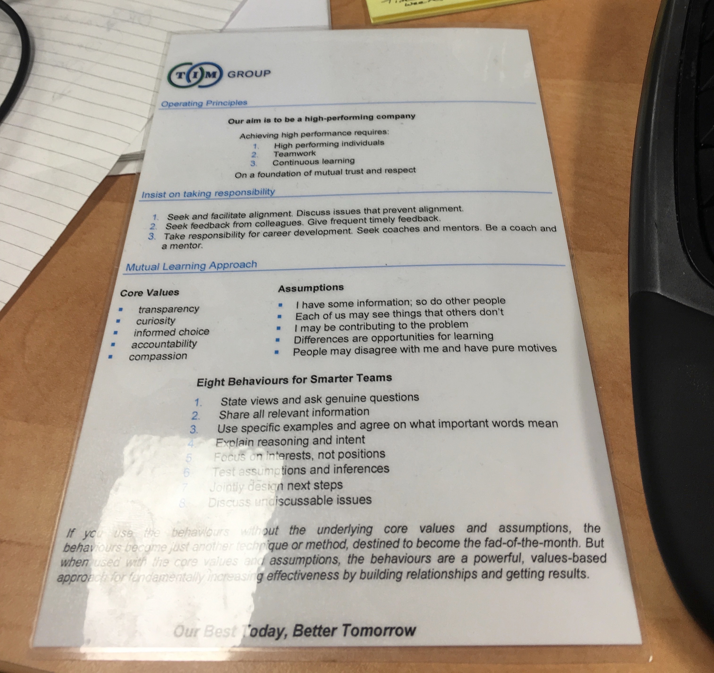
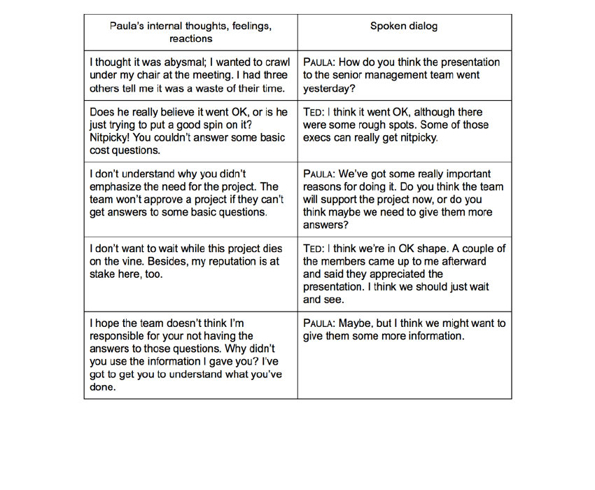

Who Am I?
Conclusions
- Our minds generate the illusion of certainty
- We have been conditioned to act as though the illusion is certainty
- Our lack of skills in navigating our mutual illusions creates suffering
- We have the option to learn to do better
Topics
- Biases and Distortions
- Action Science
- Non Violent Communication
- 5 Secrets of Effective Communication
- Practicing Interactions
Cognitive Biases
- Illusion of asymmetric insight
- Illusion of transparency
- Self-serving bias
- Confirmation bias
- ... and hundreds more...
Thinking, Fast and Slow

Kahneman's Thinking Systems
- System 1: fast, involuntary, no effort, biased
- System 2: slow, voluntary, effortful, lazy
- Most of what you think and do originates in System 1 with System 2 called upon to prevent errors
- The error prevention sucks
- This is a major cause of conflict between people
Topics
- Biases and Distortions
- Action Science
- Non Violent Communication
- 5 Secrets of Effective Communication
- Practicing Interactions
Action Science
- Research of Chris Agyris between 1957 and 2004
- The study of how human beings design their actions in difficult situations
- Feedback loops based on ladder of inference, double loop learning
Agyris's Models
- Unilateral Control Model
- Mutual Learning Model
Unilateral Control: Values
- Win, don’t lose
- Be right
- Minimise expressions of negative feelings
- Act rational
Unilateral Control: Outcomes
- Ineffective working relationships
- Lower performance
- Reduced well-being
Mutual Learning: Values
- Transparency
- Curiosity
- Informed choice
- Accountability
- Compassion
Mutual Learning: Outcomes
- Effective working relationships
- Improved performance
- Improved well-being
8 Behaviours for Mutual Learning
Behaviour 1
State views and ask genuine questions
Behaviour 2
Share all relevant information
Behaviour 3
Use specific examples and agree on what important words mean
Behaviour 4
Explain reasoning and intent
Behaviour 5
Focus on interests, not positions
Behaviour 6
Test assumptions and inferences
Behaviour 7
Jointly design next steps
Behaviour 8
Discuss undiscussable issues
Topics
- Biases and Distortions
- Action Science
- Non Violent Communication
- 5 Secrets of Effective Communication
- Practicing Interactions
Topics
- Biases and Distortions
- Action Science
- Non Violent Communication
- 5 Secrets of Effective Communication
- Practicing Interactions
Topics
- Biases and Distortions
- Action Science
- Non Violent Communication
- 5 Secrets of Effective Communication
- Practicing Interactions
Desk Reminders
Two Column Case Study
Practice